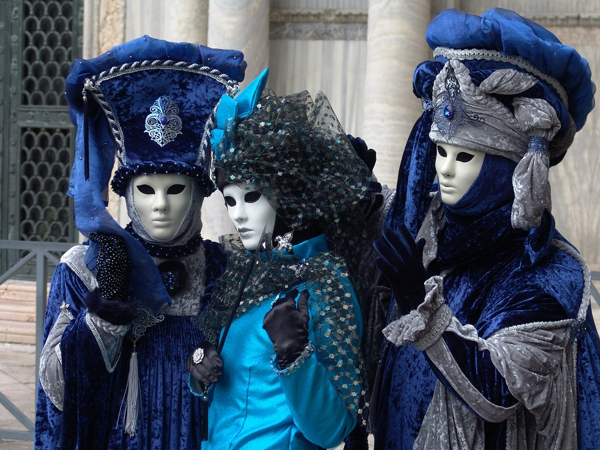

Localizado ao pé do Maciço Latemar nas Dolomitas italianas está o Lago Carezza. Assim, é um local belíssimo, cercado por montanhas cobertas de neve e pinheiros altíssimos. O lago é conhecido como o lago arco-íris, devido à infinidade de cores refletidas por sua água.
De acordo com a lenda, o lago Carezza era o lar de uma bela ninfa da água que se sentava à beira-mar. E cantava para si mesma.
Um dia, o feiticeiro de Masarè estava viajando nas proximidades, ouviu-a cantando e imediatamente se apaixonou. No entanto, a ninfa desapareceria no lago sempre que alguém se aproximasse dela – e até mesmo a magia do feiticeiro não poderia capturá-la.

A conselho de uma bruxa, o feiticeiro lançou um arco-íris que se estendia de Catinaccio às montanhas Latemar. E com a intenção de usar o arco-íris para atrair a ninfa.
Desse modo, seu plano funcionou, mas o feiticeiro esqueceu de se disfarçar e a ninfa da água percebeu que o arco-íris era uma armadilha. Em sua raiva, o feiticeiro quebrou o arco-íris e os pedaços caíram no lago; criando as belas cores ainda visíveis hoje.
Perto da cidade de Brescia está o Lago Iseo e a ilha de Monte Isola. Sendo assim, durante os meses de verão, ocorre um fenômeno meteorológico – tempestades massivas que vêm da parte sudoeste do lago – que foram batizadas de ‘La Sarneghera’ pelos habitantes locais.
Então, a história dessas tempestades foi atribuída a acontecimentos ocorridos durante a Idade Média. Assim, uma bela senhora de Monte Isola – prometida contra a sua vontade a um nobre mais velho – caiu no lago e foi resgatada por um pescador.
Os dois se apaixonaram e ficaram felizes até que seu pai descobriu o encontro amoroso. E exigiu que ela ficasse presa em um castelo até o dia de seu casamento.
No dia de seu casamento, seu pai a deixou visitar o lago – enquanto ordenava que o pescador fosse morto. Logo, ao ouvir os gritos de seu verdadeiro amor, a senhora se jogou no lago.
Acredita-se que as tempestades anuais são os dois amantes clamando por outro. E exigindo vingança na terra que os separou.
Em 410 d.C, Alaric – rei dos visigodos – tornou-se o primeiro inimigo estrangeiro a capturar Roma em mais de 800 anos. E isso aconteceu quando ele deixou a cidade com suas tropas para se aventurar no Norte da África. Assim, eles estavam sendo forçados a recuar por uma terrível tempestade e voltaram pela região da Calábria.
No entanto, quando eles alcançaram a Cosenza dos dias modernos, Alaric morreu. Logo, os escravos de sua tropa ordenaram que desviassem o rio Busento. E criassem uma tumba cheia de tesouros grande o suficiente para Alaric, seu cavalo e uma vida inteira de riquezas acumuladas.
Assim que a tumba foi concluída, o rio foi redirecionado. E a tumba coberta de água – com a localização exata mantida em segredo.
Desse modo, durante meados do século XVIII, os exploradores tentaram desenterrar a tumba – mas sem sucesso. Desde então, uma nova teoria surgiu; que a tumba está localizada na confluência dos rios Caronte e Canalicchio.
É estudo das lendas da Roma Antiga, usadas para explicar a formação do mundo, os fenômenos da natureza, os sentimentos e sensações físicas dos humanos e a evolução do conhecimento.
Surgida em meados do século VIII a.c. com a fundação de Reino de Roma, vigorou por mais de mil anos na península Itálica.
Os deuses romanos eram ligados à vida prática. Ou seja, eram deuses úteis, que zelava pelos lares.
Entre os deuses mais conhecidos, da mitologia romana destacam-se: Júpiter (senhor do universo), Marte (deus da guerra), Apolo (deus do sol e medicina), Netuno (deus do mar), Minerva (deusa da inteligência e sabedoria) e Juno (deusa do casamento e parto), Ceres (deusa da Terra e dos cereais), Mercúrio (deus do comercio), Baco (deus do vinho e alegria), Vênus (deusa da beleza e amor), Diana (deusa da lua e caça).
Até hoje na modernidade, os deus romanos são lembrados por seus mitos representados na arquitetura, obras de arte e na indústria cinematográfica .
Tida como uma das celebrações carnavalescas mais extraordinárias do mundo, o Carnaval de Veneza é um festival de cor e opulência, com máscaras faciais e trajes elaborados com grande requinte e extravagância. Uma cerimónia tendo como pano de fundo os canais da celebrada Veneza, que vale a pena experimentar uma vez na vida.
Duas vezes por ano, a 2 de julho e 16 de agosto, na Piazza del Campo em Siena, ocorre uma corrida de cavalos em que participam dez dos dezassete bairros da cidade. A corrida, tradição com vários séculos de existência, inclui apenas três voltas à praça. Atrai a Siena uma multidão de habitantes, aficionados e turistas. O Palio de Siena é um dos pontos altos das festividades toscanas.
Organizado pela prestigiada La Biennale di Venezia, o Festival Internacional de Cinema de Veneza é o mais antigo e um dos mais conceituados festivais de cinema do mundo. É uma época em que a cidade fica praticamente tomada pelos participantes no festival, que decorre anualmente entre finais de agosto e meados de setembro.
Faz parte do restrito grupo de quatro cidades denominadas as Big 4 no mundo da moda, a par de Paris, Londres e Nova Iorque. A Semana da Moda de Milão ocorre a cada seis meses, em fevereiro/março e setembro/outubro. É um dos eventos mais importantes no mundo da moda a nível global.
Habitualmente disputado no Circuito de Monza, o Grande Prémio de Itália de Fórmula 1 é um dos maiores eventos desportivos do país. A cidade de Monza fica na região da Lombardia, a cerca de 15 km de Milão.